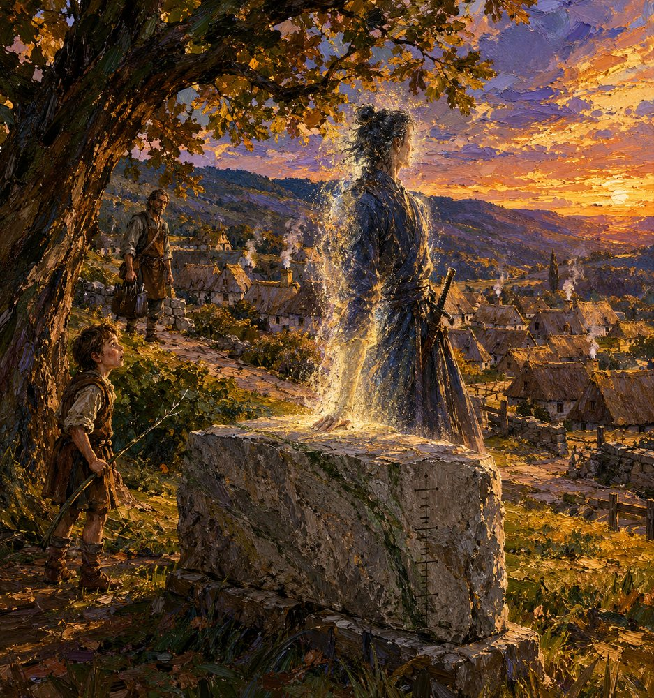

Record 7 of 14
At dusk on the nineteenth of Garren the pale grain of Tomobe no Higaide pours back up out of the tally-stone of Vilarnau into the shape of a man with his palm still on its face; Peire, eight, watches with a switch in his hand, and on the road above Observer 618 stops walking
A tall figure in dark robes with a sword at his hip rests his palm on the top of a grey granite block marked with a column of notches on its flank and shimmers into being out of glowing golden grains at sunset beneath an oak tree, a small boy with a switch gazing up at him from the left, a man with a satchel stopped on a path behind, and thatched cottages sending up smoke on the hillside below.